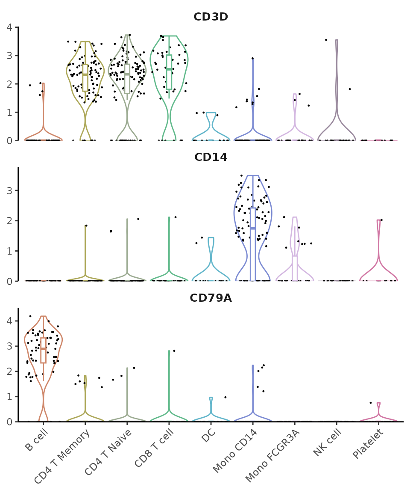
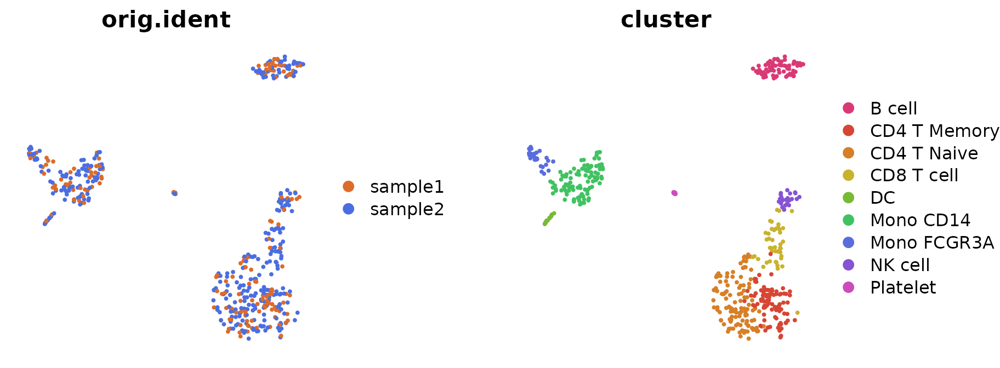

What’s New in v1.1.0
Yichao Hua
2024-11-28
News.RmdNew Features and Enhancements in v1.1.0
New Visualization Functions
Enhanced Dot Plots with DotPlot2
A new function DotPlot2 has been introduced, combining
dot size (percent of expressing cells) with color intensity (average
expression) for more informative visualizations:
library(Seurat)
library(SeuratExtend)
# With grouped features
grouped_features <- list(
"B_cell_markers" = c("MS4A1", "CD79A"),
"T_cell_markers" = c("CD3D", "CD8A", "IL7R"),
"Myeloid_markers" = c("CD14", "FCGR3A", "S100A8")
)
DotPlot2(pbmc, features = grouped_features)
New Volcano Plots
The new VolcanoPlot function provides statistical
visualization of differential expression:
VolcanoPlot(pbmc,
ident.1 = "B cell",
ident.2 = "CD8 T cell")
UMAP Arrow Annotations
Added theme_umap_arrows for simplified axis indicators
on dimension reduction plots:
DimPlot2(pbmc, theme = NoAxes()) + theme_umap_arrows()

New WaterfallPlot Style: “segment”
Added a new visualization style “segment” to WaterfallPlot, providing an alternative way to display differences between conditions:
# Prepare data
pbmc <- GeneSetAnalysis(pbmc, genesets = hall50$human)
matr <- pbmc@misc$AUCell$genesets
# Create a plot using the new segment style
WaterfallPlot(
matr,
f = pbmc$cluster,
ident.1 = "Mono CD14",
ident.2 = "CD8 T cell",
style = "segment",
color_theme = "D"
)Color Scheme Updates
New Default Color Schemes
Two major color scheme changes have been implemented in v1.1.0:
- For continuous variables: Changed from viridis “A” to RColorBrewer “Blues”
- For heatmaps: Updated from
c(low = muted("blue"), mid = "white", high = muted("red"))to “BuRd”
Here are visual comparisons of the old and new defaults:
Continuous Variable Color Scheme
# Create a side-by-side comparison for continuous variables
library(cowplot)
library(ggpubr)
# Old default (viridis "A")
p1 <- DimPlot2(pbmc,
features = "CD3D",
cols = "A", # Old default
theme = theme_umap_arrows())
# New default (Blues)
p2 <- DimPlot2(pbmc,
features = "CD3D",
theme = theme_umap_arrows())
plot_grid(
annotate_figure(p1, top = text_grob("Old Default (viridis 'A')", size = 14)),
annotate_figure(p2, top = text_grob("New Default ('Blues')", size = 14)),
ncol = 2)
Heatmap Color Scheme
# Calculate data for heatmap
genes <- VariableFeatures(pbmc)
toplot <- CalcStats(pbmc, features = genes, method = "zscore", order = "p", n = 4)
# Create side-by-side heatmap comparison
p1 <- Heatmap(toplot,
color_scheme = c(low = scales::muted("blue"),
mid = "white",
high = scales::muted("red")), # Old default
lab_fill = "zscore") +
ggtitle("Old Default (blue-white-red)")
p2 <- Heatmap(toplot,
lab_fill = "zscore") + # New default (BuRd) is automatically applied
ggtitle("New Default ('BuRd')")
plot_grid(p1, p2, ncol = 2)
To revert to previous color schemes: - For continuous variables: Use
cols = "A" - For heatmaps: Use
color_scheme = c(low = scales::muted("blue"), mid = "white", high = scales::muted("red"))
Feature Enhancements
-
VlnPlot2: Now supports both
stats.methodandstat.methodas parameter inputs (#10) -
ClusterDistrBar: Added
reverse_orderparameter to adjust the stacking order (#11) - WaterfallPlot: Set upper limit for -log10(p) values to avoid NA issues (#14)
- DimPlot2: Improved automatic point size adjustment and fixed point display issues in raster mode (#17)
- show_col2: Function is now exported, allowing users to knit Visualization.Rmd without issues (#8)
Bug Fixes
-
VlnPlot2: Now explicitly uses
dplyr::selectinternally to avoid conflicts with other packages’ select functions (#5, #10) - ClusterDistrBar: Fixed display issues when factor levels are numeric (e.g., seurat_clusters)
Documentation Updates
Conda Environment Setup
The create_condaenv_seuratextend() function
documentation has been updated with important compatibility
information:
- Currently supported and tested on:
- Windows
- Intel-based macOS (not Apple Silicon/M1/M2)
- Linux (Ubuntu 20.04)
Note for Apple Silicon Users: The function is not currently compatible with Apple Silicon/M1/M2 devices (#7). Users with Apple Silicon devices who are interested in contributing to the development of M1/M2 support are welcome to reach out via GitHub Issues.
Windows-Specific File Download
When downloading loom files (which are HDF5-based binary files) on
Windows, it’s essential to use mode = "wb" in the
download.file() function:
# Example for Windows users
download.file("https://example.com/file.loom", "file.loom", mode = "wb")This prevents Windows from modifying line endings in the binary file, which would corrupt the HDF5 format. Mac and Linux users don’t require this parameter, but including it is harmless.
## R version 4.4.0 (2024-04-24)
## Platform: x86_64-pc-linux-gnu
## Running under: Ubuntu 20.04.6 LTS
##
## Matrix products: default
## BLAS: /usr/lib/x86_64-linux-gnu/blas/libblas.so.3.9.0
## LAPACK: /usr/lib/x86_64-linux-gnu/lapack/liblapack.so.3.9.0
##
## locale:
## [1] LC_CTYPE=en_US.UTF-8 LC_NUMERIC=C
## [3] LC_TIME=de_BE.UTF-8 LC_COLLATE=en_US.UTF-8
## [5] LC_MONETARY=de_BE.UTF-8 LC_MESSAGES=en_US.UTF-8
## [7] LC_PAPER=de_BE.UTF-8 LC_NAME=C
## [9] LC_ADDRESS=C LC_TELEPHONE=C
## [11] LC_MEASUREMENT=de_BE.UTF-8 LC_IDENTIFICATION=C
##
## time zone: Europe/Brussels
## tzcode source: system (glibc)
##
## attached base packages:
## [1] stats4 grid stats graphics grDevices utils datasets
## [8] methods base
##
## other attached packages:
## [1] rlang_1.1.4 ggpubr_0.6.0
## [3] scales_1.3.0 DelayedMatrixStats_1.26.0
## [5] DelayedArray_0.30.1 SparseArray_1.4.8
## [7] S4Arrays_1.4.1 abind_1.4-5
## [9] IRanges_2.38.1 S4Vectors_0.42.1
## [11] MatrixGenerics_1.16.0 matrixStats_1.3.0
## [13] BiocGenerics_0.50.0 cowplot_1.1.3
## [15] RColorBrewer_1.1-3 ggrepel_0.9.5
## [17] tidyr_1.3.1 viridis_0.6.5
## [19] viridisLite_0.4.2 mosaic_1.9.1
## [21] mosaicData_0.20.4 ggformula_0.12.0
## [23] Matrix_1.7-0 lattice_0.22-6
## [25] rlist_0.4.6.2 dplyr_1.1.4
## [27] reshape2_1.4.4 ggplot2_3.5.1
## [29] SeuratExtend_1.1.0 SeuratExtendData_0.2.1
## [31] Seurat_5.1.0 SeuratObject_5.0.2
## [33] sp_2.1-4
##
## loaded via a namespace (and not attached):
## [1] RcppAnnoy_0.0.22 splines_4.4.0 later_1.3.2
## [4] tibble_3.2.1 polyclip_1.10-6 fastDummies_1.7.3
## [7] lifecycle_1.0.4 rstatix_0.7.2 globals_0.16.3
## [10] MASS_7.3-61 backports_1.5.0 magrittr_2.0.3
## [13] plotly_4.10.4 sass_0.4.9 rmarkdown_2.29
## [16] jquerylib_0.1.4 yaml_2.3.9 httpuv_1.6.15
## [19] sctransform_0.4.1 spam_2.10-0 spatstat.sparse_3.1-0
## [22] reticulate_1.38.0 pbapply_1.7-2 zlibbioc_1.50.0
## [25] Rtsne_0.17 purrr_1.0.2 labelled_2.13.0
## [28] irlba_2.3.5.1 listenv_0.9.1 spatstat.utils_3.0-5
## [31] goftest_1.2-3 RSpectra_0.16-1 spatstat.random_3.2-3
## [34] fitdistrplus_1.2-1 parallelly_1.37.1 pkgdown_2.0.7
## [37] leiden_0.4.3.1 codetools_0.2-20 tidyselect_1.2.1
## [40] farver_2.1.2 spatstat.explore_3.2-7 jsonlite_1.8.8
## [43] progressr_0.14.0 ggridges_0.5.6 survival_3.7-0
## [46] systemfonts_1.1.0 tools_4.4.0 ragg_1.3.2
## [49] ica_1.0-3 Rcpp_1.0.13 glue_1.7.0
## [52] gridExtra_2.3 xfun_0.45 withr_3.0.0
## [55] fastmap_1.2.0 fansi_1.0.6 digest_0.6.36
## [58] R6_2.5.1 mime_0.12 textshaping_0.4.0
## [61] colorspace_2.1-0 scattermore_1.2 tensor_1.5
## [64] spatstat.data_3.1-2 utf8_1.2.4 generics_0.1.3
## [67] data.table_1.15.4 httr_1.4.7 htmlwidgets_1.6.4
## [70] uwot_0.2.2 pkgconfig_2.0.3 gtable_0.3.5
## [73] lmtest_0.9-40 XVector_0.44.0 htmltools_0.5.8.1
## [76] carData_3.0-5 dotCall64_1.1-1 png_0.1-8
## [79] knitr_1.48 rstudioapi_0.16.0 nlme_3.1-165
## [82] cachem_1.1.0 zoo_1.8-12 stringr_1.5.1
## [85] KernSmooth_2.23-24 parallel_4.4.0 miniUI_0.1.1.1
## [88] desc_1.4.3 pillar_1.9.0 vctrs_0.6.5
## [91] RANN_2.6.1 promises_1.3.0 car_3.1-2
## [94] xtable_1.8-4 cluster_2.1.6 evaluate_0.24.0
## [97] cli_3.6.3 compiler_4.4.0 crayon_1.5.3
## [100] future.apply_1.11.2 ggsignif_0.6.4 labeling_0.4.3
## [103] plyr_1.8.9 forcats_1.0.0 fs_1.6.4
## [106] stringi_1.8.4 deldir_2.0-4 munsell_0.5.1
## [109] lazyeval_0.2.2 spatstat.geom_3.2-9 mosaicCore_0.9.4.0
## [112] RcppHNSW_0.6.0 hms_1.1.3 patchwork_1.2.0
## [115] sparseMatrixStats_1.16.0 future_1.33.2 shiny_1.8.1.1
## [118] highr_0.11 haven_2.5.4 ROCR_1.0-11
## [121] igraph_2.0.3 broom_1.0.6 memoise_2.0.1
## [124] bslib_0.4.2